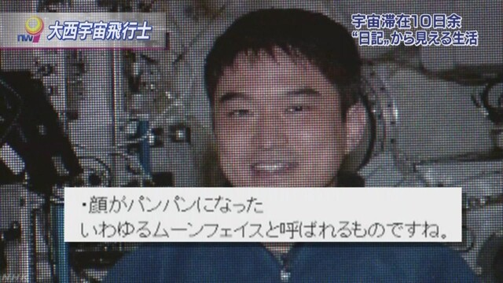

大西さん 宇宙の実感そのままに
「正直言うと不便」
大西さんは、国際宇宙ステーションでの生活の印象について、次のように述べました。「正直言うといろいろなところが不便です。おいしいご飯も食べられないし、シャワーも浴びることができません。でも、逆に、ここにしかないものがあって、すばらしい景色が広がっています」。
体調変化ありのままに
この中で、特に詳しく書き込んでいるのが宇宙での体調の変化です。ふっくらとした表情になったみずからの写真を紹介。
そして、「顔がパンパンになった。 ムーンフェイスと呼ばれるものですね」。「実際に頭に血が上った状態になるので、慣れるまでは結構不快感があります」と率直な感想を記しています。
長期滞在4日目の今月12日の投稿では、さらに項目を立てて、それぞれの詳しい症状を書き込みました。
症状の詳細
このうち宇宙酔いについては「上下の感覚がなくなって顔をいろいろな方向に向けたりしていると 車酔いのような気持ち悪い症状がでます。数日は酔い止め薬が手放せませんでした」と記しています。
また、背骨の痛みについては「これが一番しんどいかもしれません。無重力で身長が伸びたのかわかりませんが、背骨が痛いです。日中は全然気にならないのですが、朝起きた時がきついです。二度寝出来ないくらい痛いです」と記し、自分の体に起きている現象をつらさや痛みも含めて、ありのままに伝えています。
宇宙酔い（うちゅうよい）とは、宇宙飛行士が宇宙空間の無重力状態において約半数の確率で引き起こす身体症状。
めまい、嘔吐、食欲減退など、症状は乗り物酔いに似ているが、酔い止め薬の効果はない。人が無重力空間に放り出された時から数時間の内に起こり、その状態が数日（3～5日程度）続く。1週間もするとほとんど元通りになり、その後再発することはない。
乗り物酔いしたことがない人でも宇宙酔いを起こした研究結果もあり、乗り物酔いをしやすいか否かと宇宙酔いをしやすいか否かは関係がないと言われている。また毛利衛宇宙飛行士が宇宙で蛙を使った動物実験でも、嘔吐する際のような奇妙な行動を見せたことにより、動物も宇宙酔いを起こすことが分かっている。他にも、1994年に向井千秋がスペースシャトル・コロンビア号で金魚の宇宙酔い実験を行なっている。
原因は未解明な部分が多いが、無重力状態で内耳の三半規管がバランス感覚を取れなくなるためだろうと言われている。
出展：Wikipedia 宇宙酔い
2010年代の宇宙飛行士
| 氏名 | 搭乗機 | ミッション名 | 主な目的 |
| 山崎直子 | ディスカバリー | TMA-02M | 第28次長期滞在
第29次長期滞在 ISS運用、利用 |
| 古川聡 | ソユーズ（往復とも） | TMA-05M | 第32次長期滞在
第33次長期滞在 ISS運用、利用 |
| 星出彰彦 | ソユーズ（往復とも） | TMA-11M | 第38次長期滞在
第39次長期滞在 ISS運用、利用 |
| 若田光一 | |||
| 油井亀美也 | 詳細なし | 第44次長期滞在
第45次長期滞在 ISS運用、利用 |
|
宇宙飛行士の経歴
秋山豊寛
1990年12月2日、日本人初の有人宇宙飛行。ソユーズTM-11号に搭乗し、宇宙ステーションミールに6日間滞在の後、先任クルーと共にソユーズTM-10号にて地球へ帰還。当時TBSの社員であり、「宇宙特派員」として宇宙へ派遣。国際基督教大学教養学部卒。旧ソビエト連邦宇宙飛行士。
毛利衛
1992年初飛行（STS-47）。2000年に2度目の飛行（STS-99）。スペースシャトル計画において飛行した初の日本人。北海道大学理学部化学科卒（原子工学）。宇宙航空研究開発機構（JAXA）・アメリカ航空宇宙局（NASA）宇宙飛行士。
向井千秋
1994年初飛行（STS-65）。日本人・アジア人の女性として初の有人宇宙飛行。1998年に2度目の飛行（STS-95）を行い、複数回宇宙に出た最初の日本人となった。慶應義塾大学医学部卒（心臓血管外科）。JAXA・NASA宇宙飛行士。
アクセスランキング
ソーシャルランキング